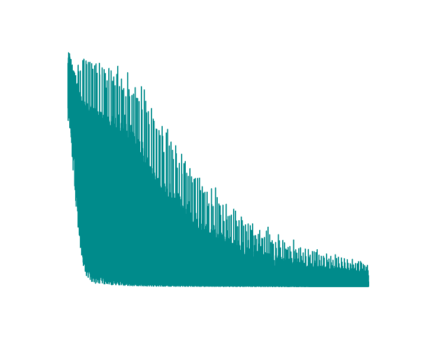
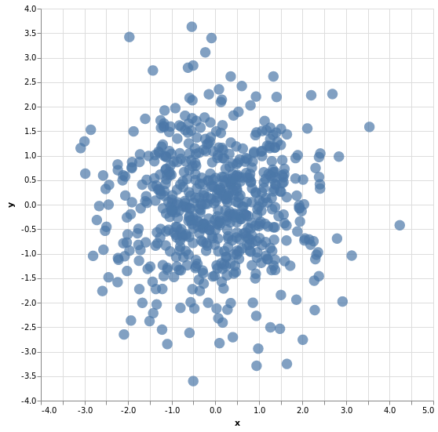

Word2Vec 2: CBOW
Na anotação anterior vimos de forma mais ou menos prática o sentido da coisa, implementamos o Word2Vec com o objetivo de identificar a proximidade semântica entre palavras com base no uso em textos, este post é fundamentalmente teórico e a implementação do cbow aqui demonstrada está muito longe de ser algo pronto para produção, é apenas um exemplo que tenta ser didático.
preparação dos dados
Como nosso objetivo é fazer com que uma rede neural receba as palavras de contexto e indique a palavra central, e na anotação anterior fiz uma pequena observação dizendo que sempre teremos $2w$ palavras de contexto para cada palavra central e assim faremos, vamos modificar um pouco o código que cria os pares do word2vec:
Assim feito, teremos algo como:
| contexto | central | contexto | central |
|---|---|---|---|
| [155, 77, 577, 495] | 544 | ['armazenado', 'ace', 'turing', 'interessou'] | posteriormente |
| [77, 544, 495, 233] | 577 | ['ace', 'posteriormente', 'interessou', 'química'] | turing |
| [544, 577, 233, 308] | 495 | ['posteriormente', 'turing', 'química', 'escreveu'] | interessou |
| [577, 495, 308, 446] | 233 | ['turing', 'interessou', 'escreveu', 'artigo'] | química |
| [495, 233, 446, 537] | 308 | ['interessou', 'química', 'artigo', 'sobre'] | escreveu |
| [233, 308, 537, 323] | 446 | ['química', 'escreveu', 'sobre', 'base'] | artigo |
| [308, 446, 323, 233] | 537 | ['escreveu', 'artigo', 'base', 'química'] | sobre |
| [446, 537, 233, 504] | 323 | ['artigo', 'sobre', 'química', 'morfogênese'] | base |
| [537, 323, 504, 506] | 233 | ['sobre', 'base', 'morfogênese', 'previu'] | química |
| [323, 233, 506, 492] | 504 | ['base', 'química', 'previu', 'reações'] | morfogênese |
| [233, 504, 492, 8] | 506 | ['química', 'morfogênese', 'reações', 'químicas'] | previu |
A rede neural
O que importa na rede neural neste método e no skip-gram é a camada Embedding
O treinamento será demorado, afinal como já dito, este não é um código para produção, é apenas um código didático, então enquanto ocorre o treinamento, não é má idéia ir tomar um chá e caminhar um pouco.
Algo que preciso ressaltar aqui é que predizer a palavra central corretamente não importa tanto, o importante é que esteja ocorrendo o aprendizado já queo que nos interessa é que os valores da camada incorporada se aproximem em palavras próximas e se distanciem para palavras distantes, então é de se esperar um gráfico horrível mostrando a evolução da perda.
Para visualizar a distribuição das palavras num plano cartesiano, faremos o mesmo que com o Gensim, usaremos a implementação do PCA disponível no slearn.
Observando a similaridade, que não é lá tão boa neste caso devido a total falta de otimização em tudo no código:
| rank sim cos | rank dist eucl | ||
|---|---|---|---|
| novas | 0.28059 | novas | 0.09326 |
| equivalia | 0.31309 | polonesa | 0.09989 |
| pioneiro | 0.31798 | neve | 0.10029 |
| afirma | 0.32445 | andrew | 0.10191 |
| neve | 0.33447 | pioneiro | 0.10310 |
| polonesa | 0.33585 | afirma | 0.10484 |
| massachusetts | 0.34675 | conduzida | 0.10508 |
| conduzida | 0.34768 | bombas | 0.10641 |
| andrew | 0.35143 | manipular | 0.10718 |
| hastings | 0.35665 | homossexuais | 0.11074 |
Observando onde cada termo está com as dimensões da camada incorporada da rede neural reduzida a 2d temos:
É compreensível ver estas distâncias tão em desarcodo pelo fato das distorções da redução de dimensões, de 10 para 2.